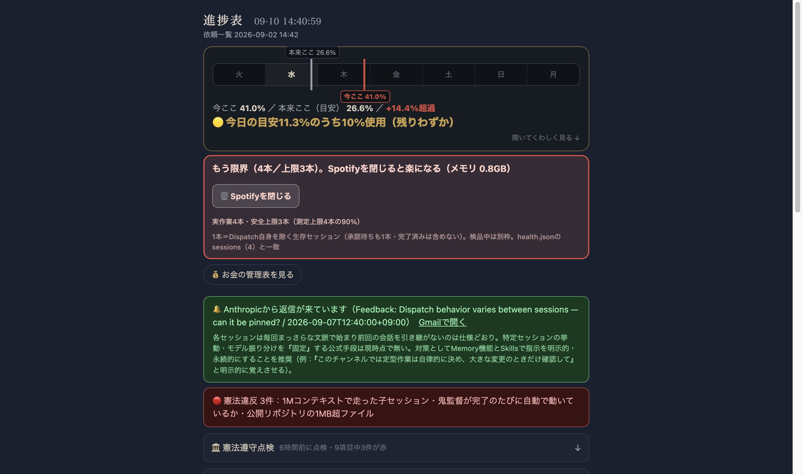

Brave Browser Helper (Renderer)（135.8%）と実測で確定。過去にload average 222まで悪化させていたeslint .のフルスキャン暴走は既に除外設定＋自動回収で解消済み。716番メンテナンス係（毎日9:25自動）はCPU上位を毎回記録するよう強化し、launchdへ正式登録・稼働確認済み。

| 確認項目 | 結果 |
|---|---|
| 常駐スクリプトが最重量CPUか | いいえ・Braveが犯人(実測) |
| load1が閾値20.0未満か | はい・8.8 |
| 進捗表ページが正常描画されるか | はい・実物スクショで確認 |
| メンテナンス係がlaunchdに登録済みか | はい・毎日9:25自動実行設定・715番と同枠組み |
| 『あとで見る棚』(652番)が動いているか | はい・219件を把握・毎日自動更新 |